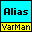
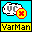
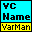
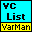
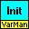
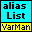
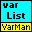
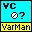
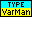
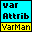

Owning Palette: Variable Manager
Advanced VarMan VIs.
| Palette Object | Description | |
|---|---|---|
 |
VM - Alias Controller.vi | Manages the association between a variable and an alias. |
 |
VM - Close loose contexts.vi | Searches for loose contexts and closes them. This VI assumes that a context is loose if its creator VI is not in a state compatible with the context's lifetime specifier. Both the context's creator and its lifetime are defined when the context is created. |
| VM - Context Info.vi | Returns information about the specified variable context. | |
 |
VM - Context Names.vi | Manages the names of local contexts. Every context can have a unique name that consists of any printable characters (a name cannot start with blanks). |
| VM - Destroy Variable.vi | Destroys a variable of any data type. | |
 |
VM - Get list of contexts.vi | Returns the VC Handles of either all open contexts or contexts belonging to the specified creator. |
 |
VM - Initializing.vi | Initializes VarMan. When this VI completes, all local variable contexts are closed and all variables are destroyed. |
 |
VM - List of Aliases.vi | Returns information about all active aliases and associated variables. |
 |
VM - List of Variables.vi | Returns information about variables in the given context. |
 |
VM - Not a VC Handle.vi | Returns TRUE if VC Handle is not a valid variable context handle. |
 |
VM - Type Code to CalcExpress Data Type.vi | Converts a numeric datatype code to CalcExpress Data Type enum. |
 |
VM - Variable Attribute.vi | Reads or writes a variable attribute. You can use this VI to associate arbitrary data with a variable and store it as an attribute. An attribute is stored as a string; if any other type is desired for the attribute, convert it to or from a string before passing or after reading. |
| VM - Variable Info.vi | Returns information about a variable. | |